BEAR: Berkeley Emergency Aerial Response
CONOPS and Vehicle Overview
This drone was designed to satisfy my senior design capstone during my undergraduate degree at UC Berkeley. The theme of the capstone class was search and rescue, with teams being tasked with making an imaging cubesat and drone to aid in locating hikers who have gotten lost on trails. The specific objective for the drone teams was to design a drone capable of flying autonomously between waypoints representing a trail and then use its thermal camera to identify the lost hiker, report their location to search and rescue teams, and drop an aid payload. These capabilities were to be tested on a "Demonstration Day" where a smaller trail and hiker surrogate would be made to asses the drone's capabilities to perform these tasks.
To accomplish this goal my team and I elected to pursue a VTOL drone design, specifically a front motor tilt rotor configuration, to allow for increased efficiently and longer flight times during length search and rescue operation while still maintaining the versatility of a quadcopter configuration. We were aware that the test area designated for demo day would be too small to be able to demonstrate the drone's fixed wing capabilities and as such would entirely run in quadcopter mode, however we felt that it was important to design for the overall theme of the project rather than the specific scenario of demo day.
This drone contained a few key innovations that separated it from other tilt-rotor designs. For one, we pursued a twin fuselage design which eliminated the need to construct extra mounting structure for the tilt mechanisms. To accommodate this decision a novel powertrain was also constructed with two sets of batteries being located in each fuselage with each battery pair powering its own half of the drone as well as the left battery pair powering the avionics bay. Secondly, we decided to design the wings using custom airfoils optimized using the DAFoam software to achieve more efficient fixed wing flight. Finally, our design contained dual payload release mechanisms allowing for two separate aid packages to be dropped in the case of multiple hikers being lost.
This project's completion was a group effort and every member of my project group contributed to its success. Below I have detailed the components of the project I worked on personally along with the final outcomes of the project.
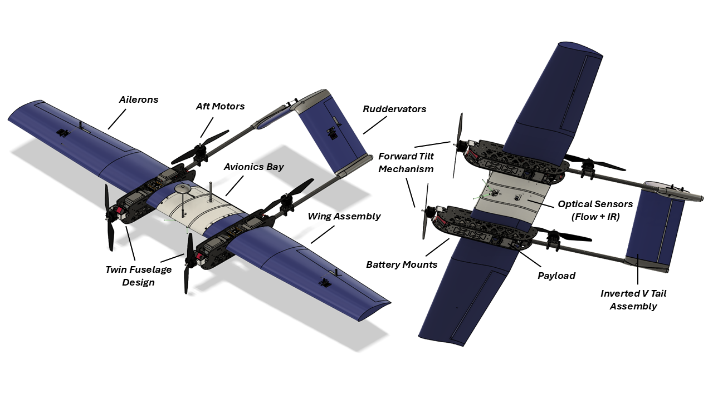
Airfoil Optimization and Wing Design
Airfoil Optimization
To achieve an aerodynamically efficient wing design I decided to leverage the aerodynamic design optimization skills I learned from my internship at NASA Ames Research Center to create a set of airfoils to use in the design of the wing. To do so I utilized the design optimization software DAFoam to create drag efficient versions of the Clark Y and NACA 4415 airfoil geometries. This software works by pinching and stretching the airfoil's shape between a set of 3 free form deformation (FFD) point pairs that are placed along the chord line. For each iteration of shape change the software solves for the relevant aerodynamic coefficients and uses that to march towards a solution that minimizes the chosen objective function.
For these airfoils I chose to conduct a multipoint optimization across 4 angles of attack with weights assigned to each point based on a normal distribution centered at an angle of attack of 0 degrees. This means that these airfoils were optimized across a variety of operating conditions with preference given to conditions that were near trim resulting in airfoils that are efficient over an increased range. Each airfoil was optimized to reduce CD while holding CL constant. Geometric constraints were also placed on the optimization with a minimum thickness constraint at each FFD pair of 85% the original thickness and volume constraint of total volume remaining constant being applied. The base computational fluid dynamics (CFD) solver was configured to use an incompressible pressure based formulation with the K-Omega SST viscosity model being chosen to model the boundary layer. The airfoils were both optimized at a fixed speed of 20 m/s with the initial mesh having a y+ of 25.
Once the drag efficient geometries were created they were then analysed and compared to their initial baseline geometries using Xfoil. This analysis was conducted over a full -20 to 20 angle of attack sweep at a fixed velocity of 20 m/s. This analysis revealed that for angles of attack near 0 degrees the optimized airfoils achieved greater L/D than the optimized version. This indicates that near the trim condition these airfoils would fly more efficiently than their unoptimized counterparts thus resulting in increased range during steady level flight.
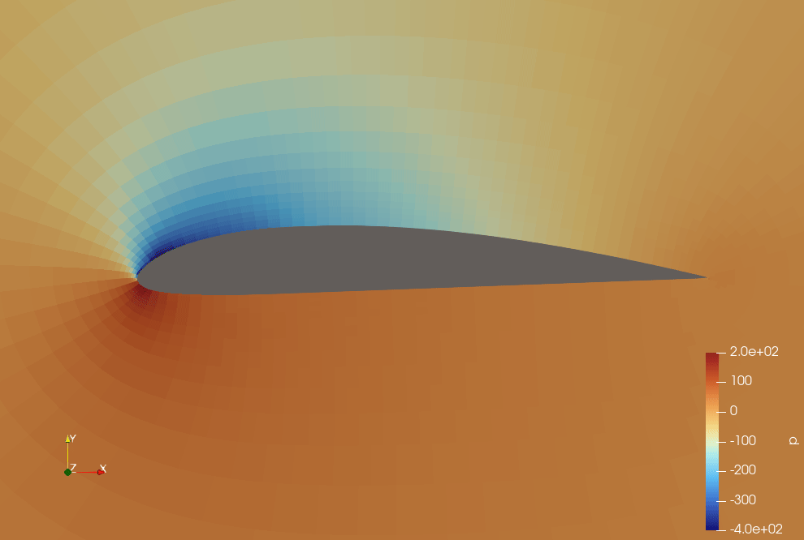
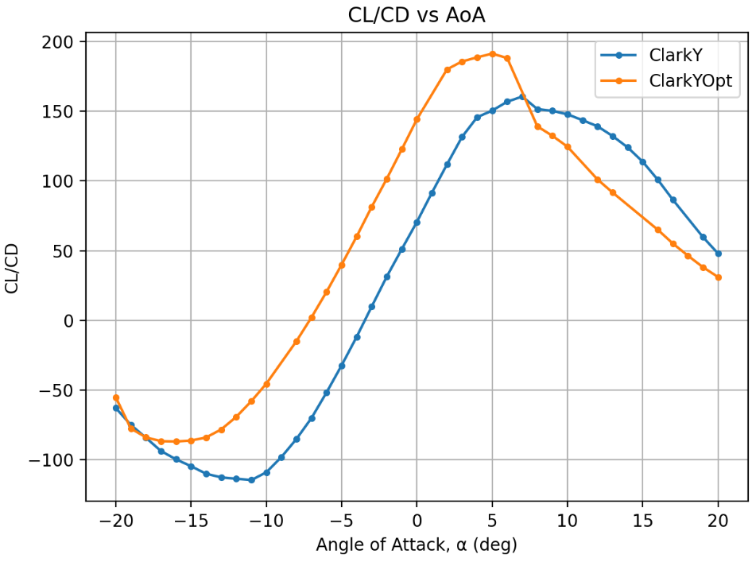
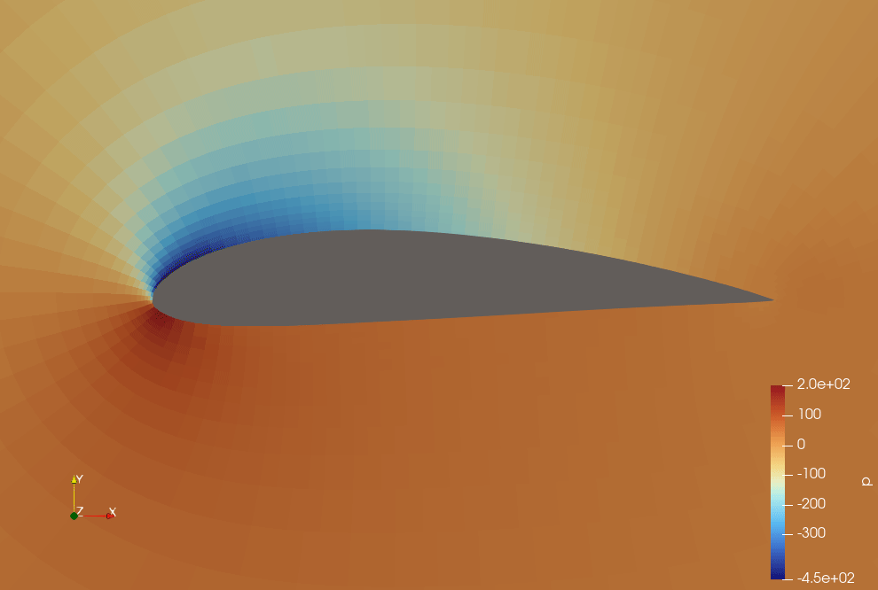
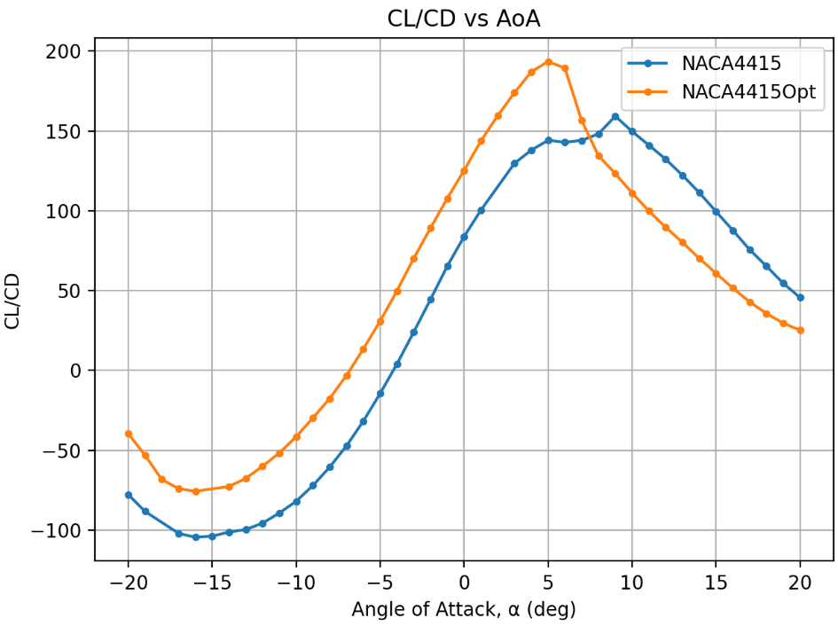
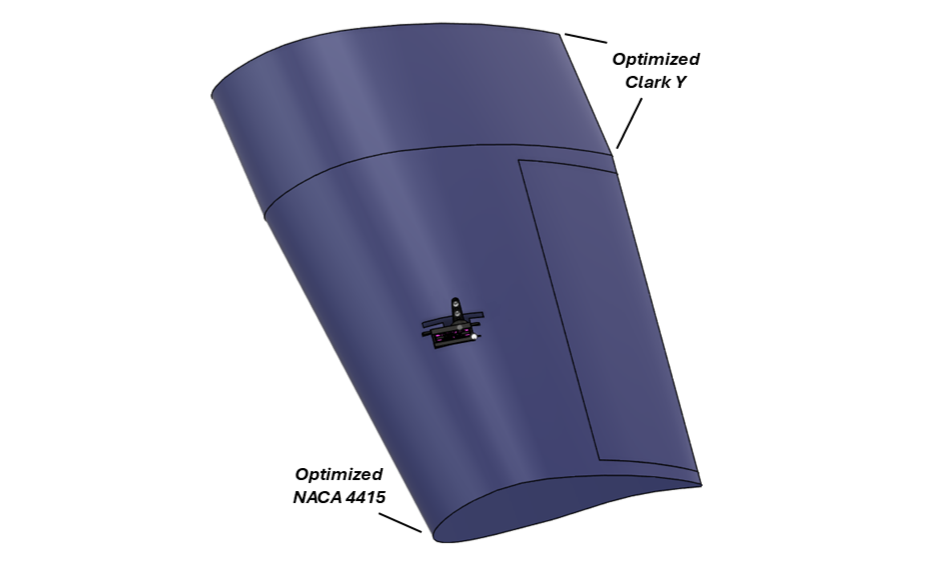
Wing Design
Once these airfoils were created they needed to be integrated into a 3D wing design. To achieve this it was decided to utilize a tapered wing design in order to achieve a wing lift distribution that more closely approximates the ideal elliptical distribution and as such achieve more efficient fixed wing flight. In our case this was achieved by splitting the wing into two segments. The first segment, using the optimized Clark Y airfoil, was of constant chord and was done in order to maintain a thick airfoil at the wing root to ensure the wing was structurally stable. The second tapered section was made up of a loft between the optimized Clark Y airfoil at the root and the optimized NACA 4415 airfoil at the tip. This particular layout was chosen due to NACA 4415 being a thicker airfoil than Clark Y ensuring that the wing tip would be thick enough to house structural spars even at a smaller chord length. With this wing design in mind the total wing span of the drone was decided to be 1.6 m in order to achieve enough lift to maintain steady flight at a 0 degree angle of attack.
With the wing designed this wing as then manufactured out of foam utilizing a CNC foamcutter, outfitted with internal structural carbon fiber tubing spars, and overlapped with laminate plastic and fiber tape to increase its strength
Aerodynamic Analysis
OML and Mesh
To confirm that the drone would be able to operate successfully in a fixed wing configuration I conducted a series of ANSYS Fluent simulations for the expected angle of attack envelope the drone would be operating in. To do so I first created a simplified drone OML CAD split down the center along its symmetry plane. I was then able to create a fluid volume from this CAD for use in the ANSYS simulation. To do so I elected to utilize a half cylinder with a half-dome inlet for the fluid geometry. To ensure adequate distance from the sides of the fluid volume a radius 20 chord lengths or 10 meters was selected for the cylinder and half-dome with the ends of these being 10 meters away from the drone.
With the fluid volume created I then generated the mesh using ANSYS Fluent meshing. The mesh contained a total of 1.1 million cells with and average orthogonality of 0.15. I configured the mesh with a uniform boundary layer consisting of 17 total layers and an initial height of 0.2 mm achieving a y+ of 20. This was the best I could achieve considering the hardware limits of my personal laptop.
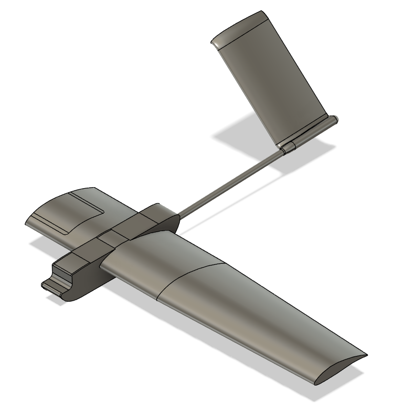
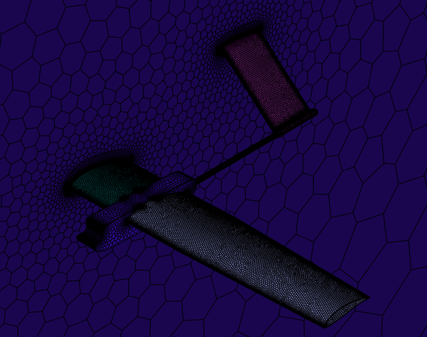
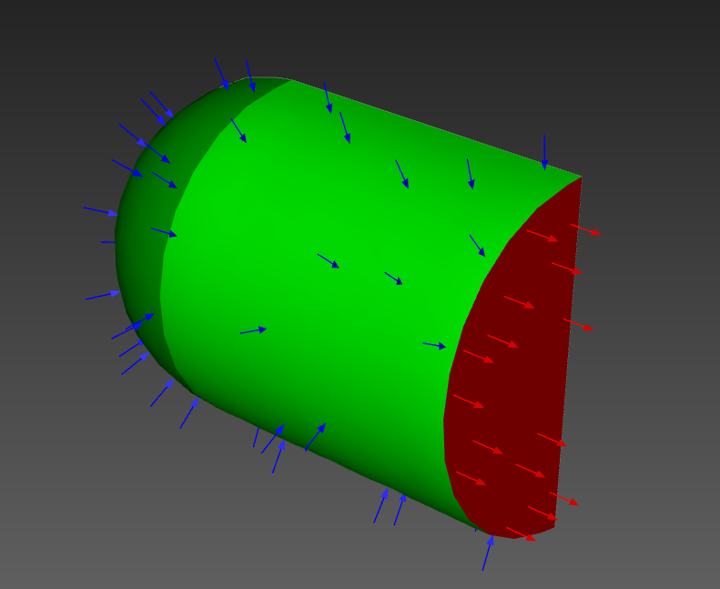
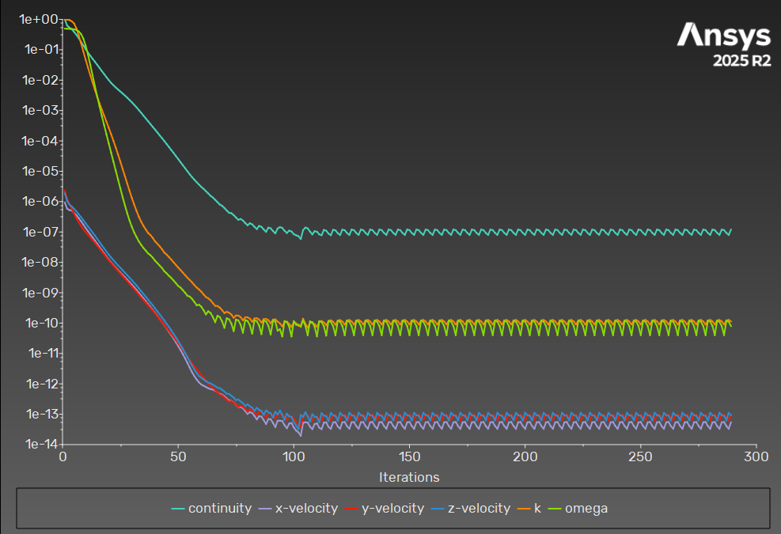
Solver Setup
Considering the projected trim cruise velocity for the drone in fixed wing flight was 20 m/s I elected to utilize Fluent's incompressible pressure based solver. The fluid domain was configured with a velocity inlet with component based velocity vector definition on both the dome and cylinder side faces. Additionally, a pressure outlet was utilized at the back end of the cylinder. Finally, symmetry plane was defined at the cross section that the original simplified OML cut was made. For the viscosity solver the K-Omega SST formulation was used and in order to ensure convergence a 1st order upwind solution was utilized.
With these solver settings the simulation was able to reach convergence within 150 iterations with sufficiently small residuals for all angles of attack cases.
Simulation Results
Results were collected for each angle of attack in the sweep. Example streamlines and contours for the 0 degree angle of attack case are exhibited to the right. From these plots we can verify that the simulation solution is broadly capturing correct characteristics of the flow. This can be seen with how the tops of the wings experience zones of low surface pressure on the top and high on the bottom as well as increased surface pressure on the leading edge. In addition the streamlines reveal a laminar oncoming flow and turbulent wake which is also to be expected from a fixed wing aircraft.
For each angle of attack the CL, CD, and L/D was determined and is displayed in the graphs below. These coefficients were calculated utilising a fixed sea level density of 1.225 kg/m3 and a fixed velocity of 20 m/s. Additionally wing area was calculated using a mean aerodynamic chord of 0.2 m and a wing span of 1.6 m. Important takeaways from this analysis are two fold. For one from the ANSYS simulation it was determined that for the 0 degree angle of attack case 41.2 N of lift was generated which matched well with initial estimates generated from XFLR5. Additionally, it can be seen from the graphs that the maximum L/D ratio is achieved at an angle of attack of 0 degrees. This means that the drone is achieving its most efficient flight at the trim condition verifying the validity of the wing design and optimization.
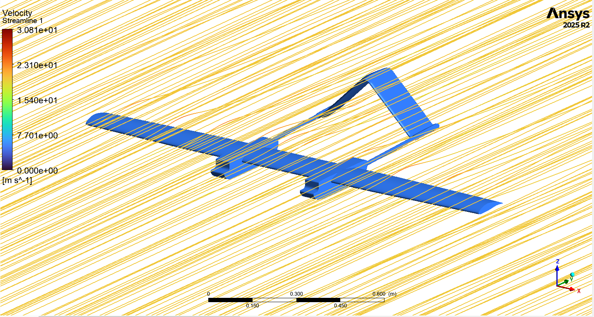
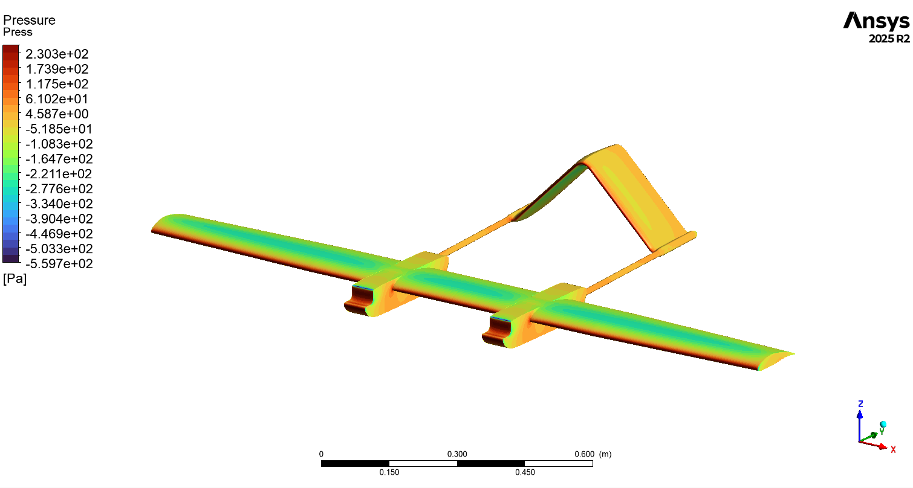
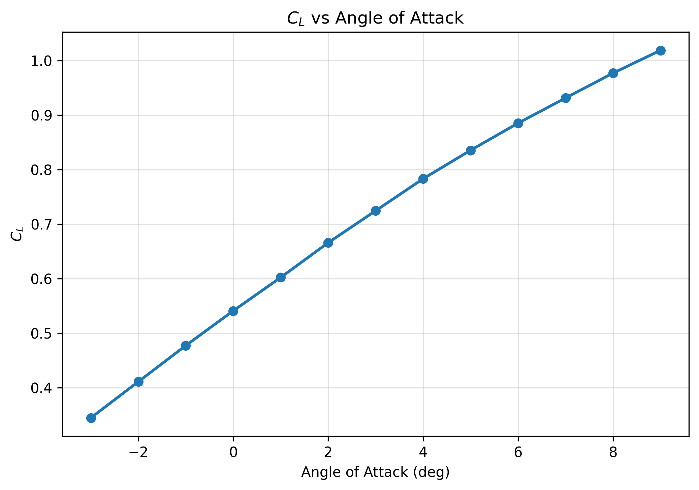
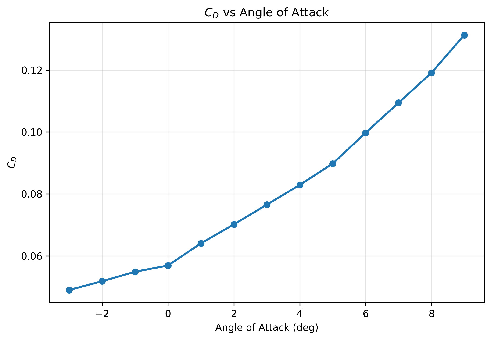
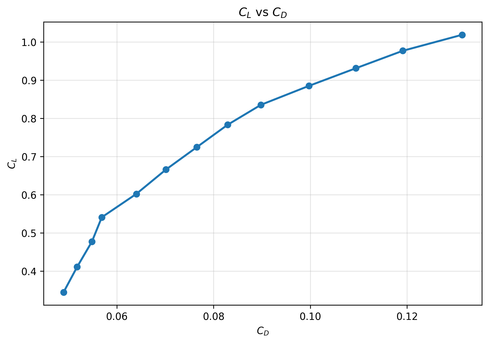
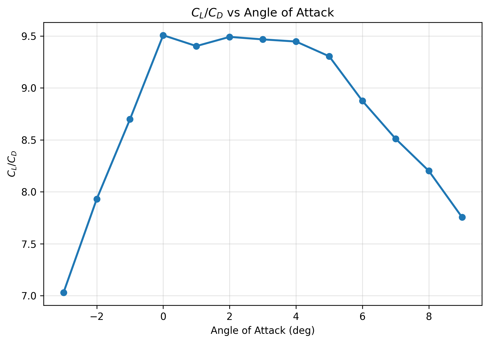
Tiltrotor Mechanism Design
To successfully accomplish transition between fixed wing and quadcopter flight a tilt mechanism needed to be designed that could hold the motor in place and quickly move the motor and propeller during high RPM operation. To do so I chose to utilize a 20 kg robotic locking servo motor to hold and move the front two motors between these two configurations. Additionally, two adapting brackets were designed to, in conjunction with aluminum standoffs, attach the robotic servos to the fuselage plates. The ability of these servos to move and hold the motors in was assessed using both simple hand calculations and unit tests of the servos themselves. Utiling simple hand calculations assuming worst case loading and RPM conditions it was determined that the servos would be able to hold the motors in place with a factor of safety of 10 and would be able to transition the motor between configurations in 0.3 seconds with a 1.5 factor of safety. These calculations were confirmed in testing with the servos being able to achieve transition in 1 second at 70% throttle which was decided to be our maximum reasonable operating conditions for transition.
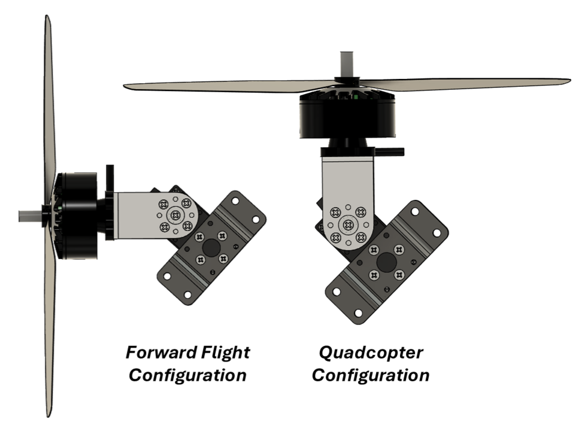
Manufacturing
I served as the main manufacturing engineer for this project as I was the sole member of the group with the equipment training necessary to handle cutting sheet metal and carbon fiber. Due to this I handled all cutting and bending of the components utilizing these materials.
The main fuselage, ESC mounting, and aft motor mounting components were all cut out of 3 mm carbon fiber laid up sheets. These sheets were cut utilizing an OMAX Waterjet cutter. I facilitated the cutting throughout the entirety of the manufacturing process including creating the nested DXF file, creating te tool path in Omax Layout, and performing the actual cutting operation on the waterjet itself. The manufacturing process went smoothly bar some issues with delamination. Due to how tightly spaced the nested parts needed to be in order to cut them all out of one sheet as well as the complicated cut geometry of the plates there were large amounts of piercing points concentrated over a very small diameter. This resulted in delamination over most of the CF parts cut from the plates. I attempted to use waterjet settings to limit these issues however they were not enough to completely avoid delamination and due to having no facility in which predrilling piece points was allowed to be done we simply had to accept the delamination and bake that into our structural analysis.
The battery mount U channels and tilt servo brackets were both cut out of 1/16 in 5052 Aluminum sheet metal on a Fablight metal laser cutter. Similar to the jet I handled manufacturing process from start to finish for all of the aluminum cuts. In addition the battery mount U channels needed to be bent into shape which I did on a manual break. This resulted in the successful fabrication of all the necessary aluminum parts, each having a set of spares.
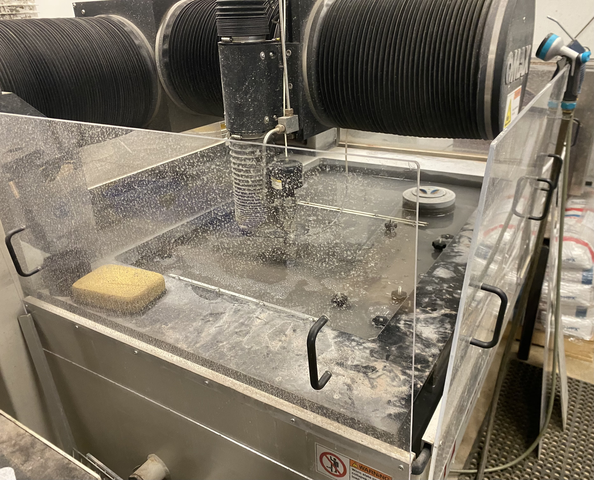
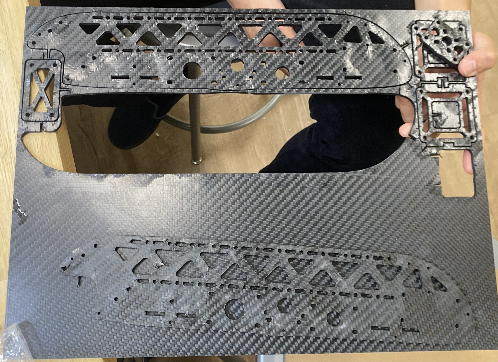
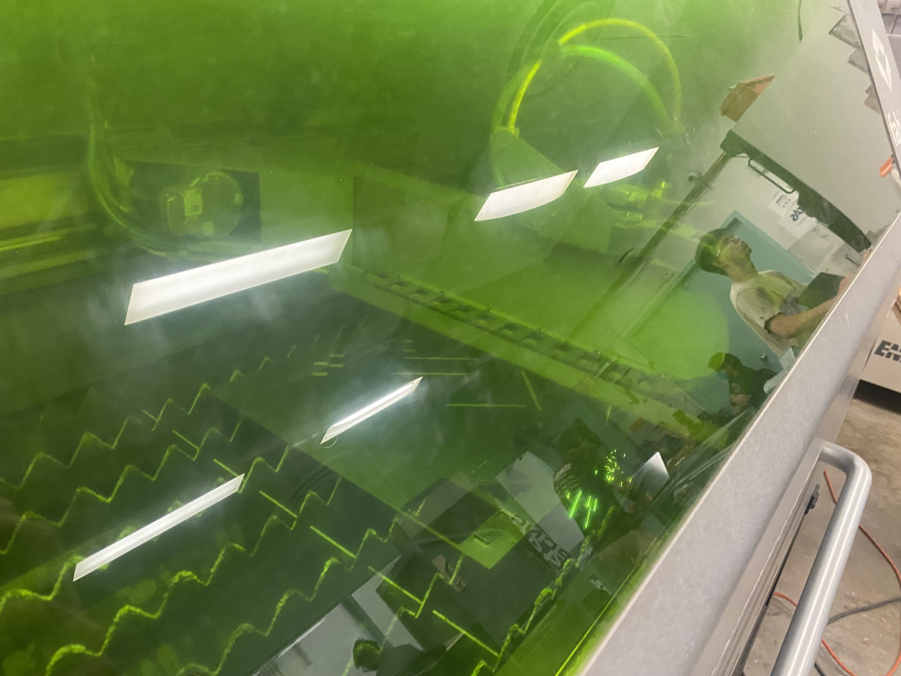
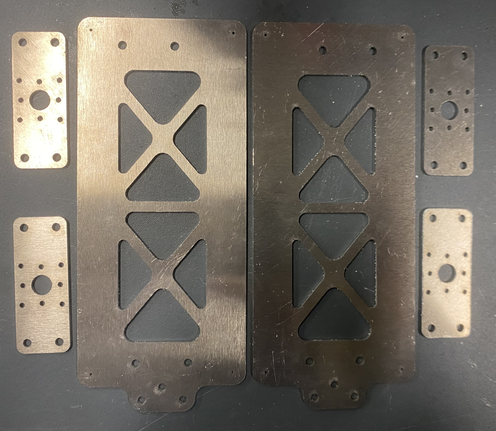
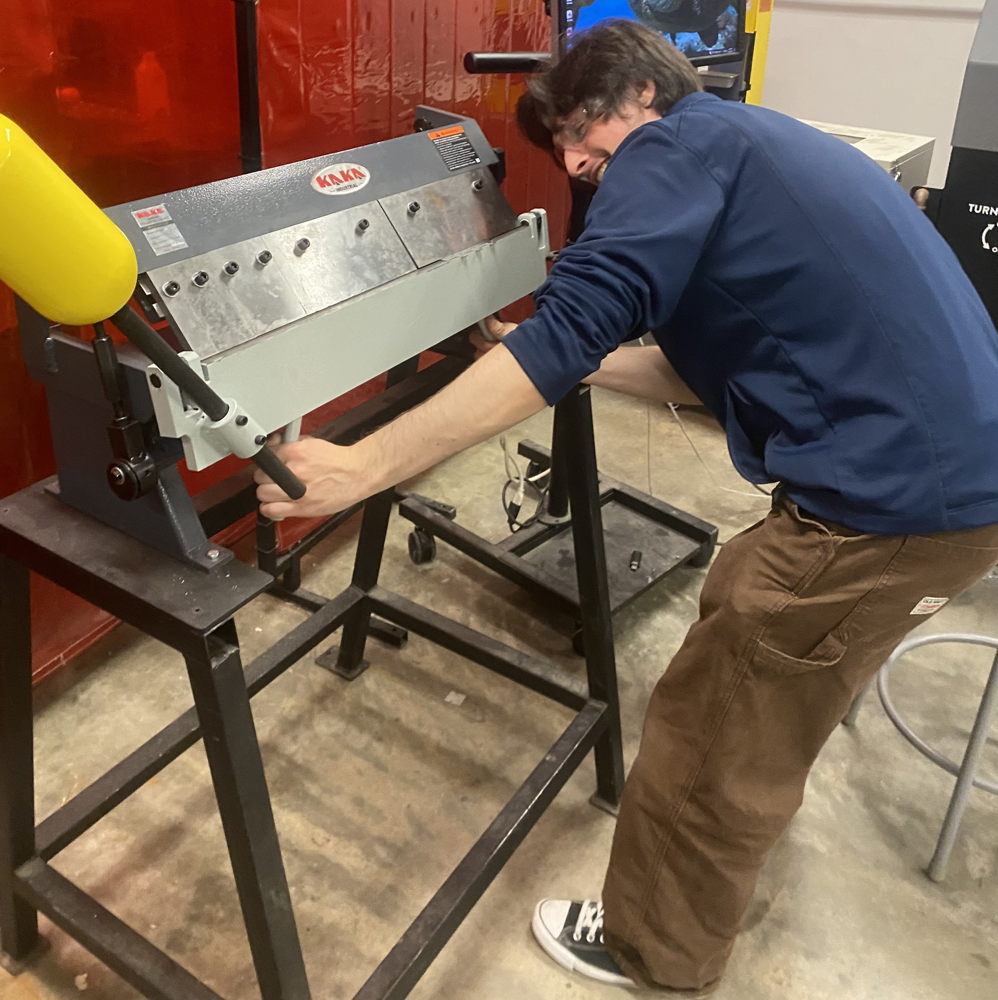
Flight Test and Final Demonstration
Integrated Flight Test
This video shows the final integrated flight test that was conducted before demonstration day. This test simulated a shortened version of the demonstration day mission with the drone autonomously taking off, traveling between a series of 3 way points including lingering at each waypoint for 3 seconds, and then finally performing an autonomous return to landing.
This test came at the end of a multi-day flight test campaign. During this test campaign we verified the operation of multiple quadcopter configuration features starting from manual flight, automatic hover, automatic position holding, autonomous take off, autonomous return to landing, geofence beaching procedure and then finally the integrated test. These combination of tests along with the complete success of the demo-day procedure simulation gave us confidence that the drone would be able to successfully complete the demo day mission.
Demonstration Day Flight
This video showcases the result of our main demonstration day flight. This day the winds were significantly higher than on any of our previous testing days (10-12 mph) and as such the drone was struggling to fight against the wind. This did not cause issues with drone stability but did however cause issues with flight time. In the capstone class the batteries were had to use for the drones were provided to use by the class with the use of these particular batteries being mandatory. These batteries were very small in capacity with each battery being a 3s with only 2200 mAh of capacity. Additionally due to our drone being a VTOL it was fairly heavy (3.7 kg) meaning that to even be able to fly we needed to utilize 4 of these 3s batters combining them in series to make two 6s sets to even be able to make it off of the ground. In addition, the flight area mandated by the demo day mission was much larger than originally expected which further compounded the flight time issue. THis resulted in the drone hitting our automatic low battery land in place failsafe during operation due to both overall battery depletion and dips in working voltage under load from wind gusts resulting in the drone automatically landing before it could complete the course.
Due to these issues with capacity we were unable to fully complete the course however since the location of the hiker surrogate was fairly early on in the course we were able to determine its location and upon retrieval of the drone, extract that location from its on-board computer. Unfortunately we were not able to drop the medical payload due a malfunction that was experienced day of which caused the payload to be automatically dropped upon takeoff. This as attributed to the thermal camera picking up a spike in head from the landing pad concrete upon takeoff resulting in a false positive hiker identification and the early deployment of the payload.
Crash and Failure Analysis
This video depicts the drone's final flight post demonstration day where we attempted to address the issues we observed on demo day by increasing the drone's throttle cap and converting some automatic failsafes to give warning instead of triggering automatic landings. Once we did this however the drone stopped behaving as expected and instead uncontrollably began to climb in altitude as it maxed-out the throttle of the motors in an attempt to fight the wind. Once we realized the drone was climbing too rapidly the decision was made to trigger the drone's automatic return to landing feature however despite commanding it to do so the drone continued to climb in altitude. Once this measure failed the call was made for our pilot to assume manual control of the drone and manually land it. This initially began to work with the drone slowly lowering in altitude however at the critical moment one of the propellers shattered resulting in the drone nose diving into the ground.
Upon analysing the video of the crash we were unable to fully determine why the drone was increasing in altitude so rapidly. The best theory we came up with was just that the autopilot was poorly configured for such high thrusts and as such was unable to figure out how to make the small throttle adjustments needed to maintain proper control. We did determine a more concrete explanation as to why the front propellor exploded. The prominent theory for why this happened is due to resonance inducing vibrations onto the propellor which lead to it colding with the top of the wing shattering the propellor. This theory is supported by a few things. Firstly it is supported by the large gash in the wing on the side of the propellor that exploded indicating that there was a collision between the propellor and the wing at some point. Secondly, from the modal analysis that a member of our group had done previously we knew that one of the vehicle resonance frequencies was at a throttle of 78% of the motors. When we increase the throttle cap we did so hastily due to us being desperate to get a working flight in for demo day resulting in us forgetting about this resonance frequency and setting the cap to 80% throttle. This would mean that for a large period of time, the drone would have been operating at or near its resonance frequency.
Despite the crash and thus our inability to test fixed wing flight, this project was still a great success as we were able to demonstrate full operational capability in the quadcopter configuration. In addition we were to only team able to survive up and through demonstration day and as such were the only team that actually flew that day.
Gallery


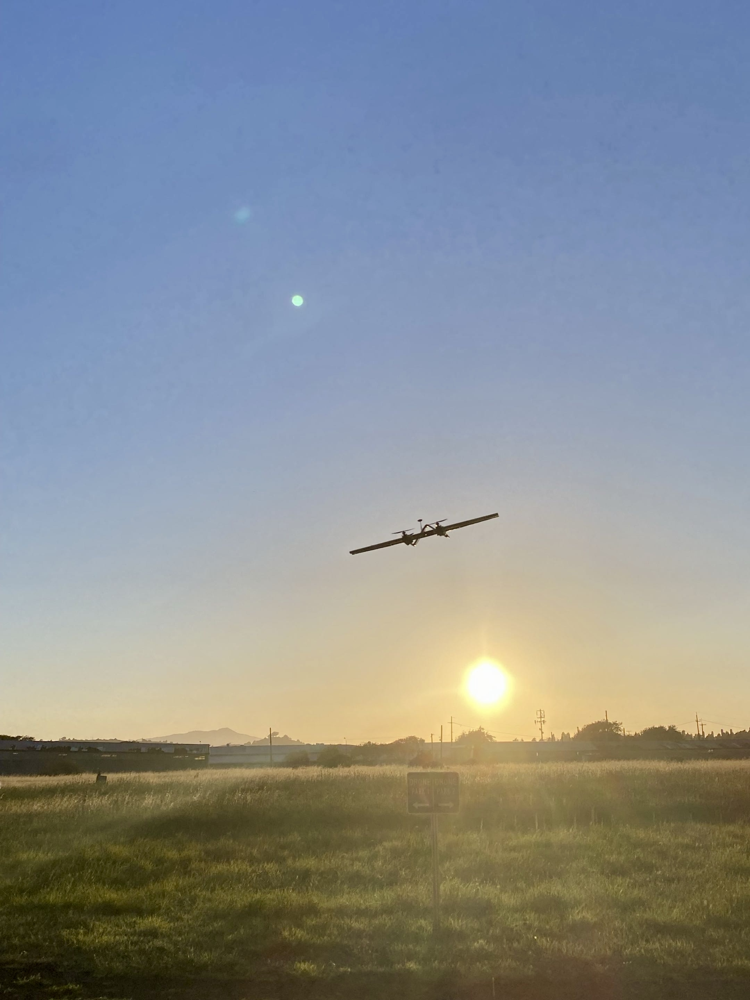
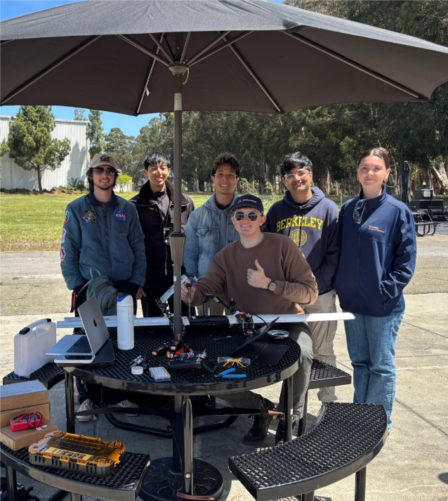


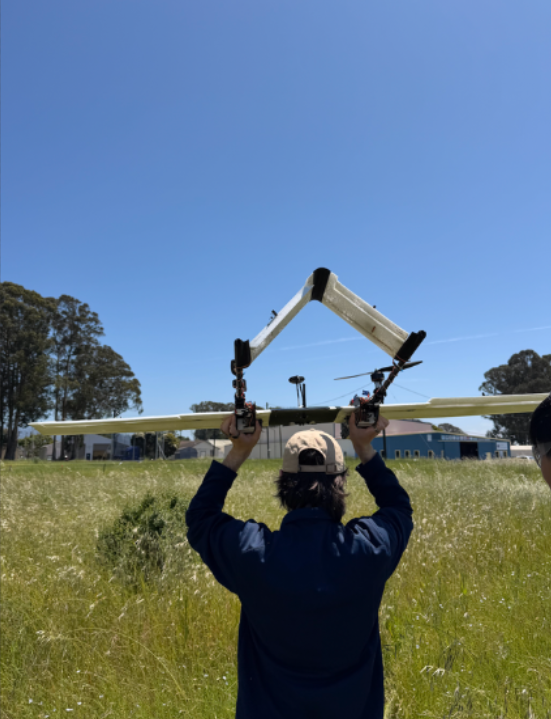